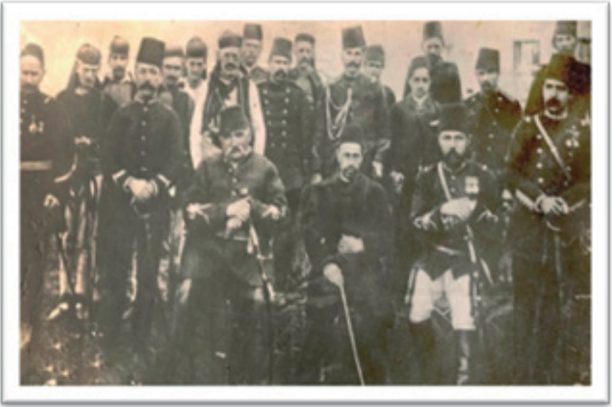
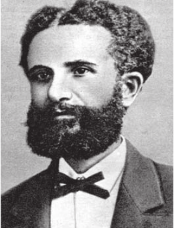
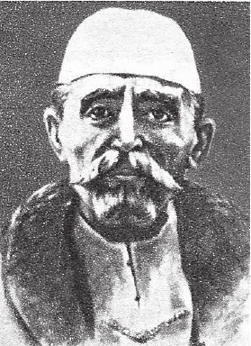
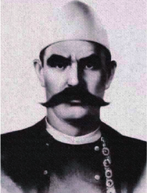

Atdhetarët shqiptarë vepruan me guxim për bashkimin e shqiptarëve, që ishin të ndarë në tri besime fetare, por që kishin një gjuhë dhe kulturë të përbashkët. Lidhja, e drejtuar nga Ymer Prizreni, Abdyl Frashëri dhe Sulejman Vokshi, formoi edhe ushtrinë e saj. Ajo organizoi luftë për mbrojtjen e tokave shqiptare që rrezikoheshin nga pushtimi i shteteve ballkanike.
Lidhja luftoi edhe kundër Perandorisë Osmane, e cila ishte kundër shkëputjes së territoreve shqiptare nga Perandoria. Ndërhyrja e forcave ushtarake turke shkaktoi rënien e Lidhjes së Prizrenit.


